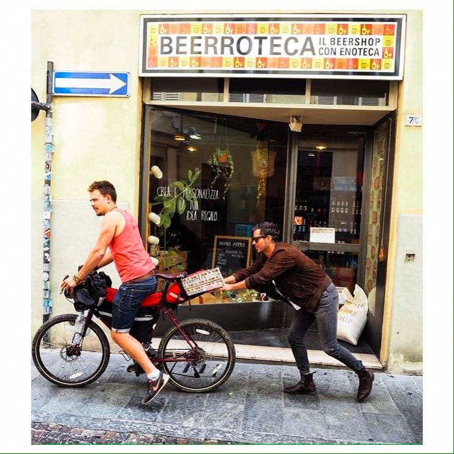

When I arrived in Parma on sunday, I was received by my ex-roomies Alex and Tito. They introduced me to their friends of the Beerroteca. This light-hearted group of people felt like family on the second day =) I also had my first beer in weeks, which was heavenly good.
They gave me the mission of bringing the panel Beerroteca.. Missione Shanghai! to China. CHALLENGE ACCEPTED.
